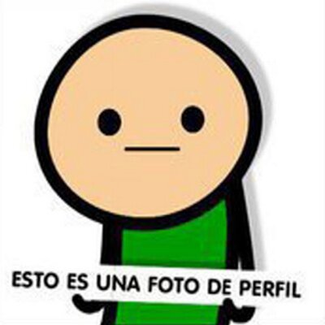
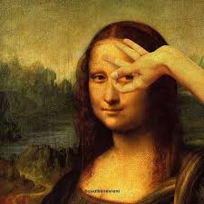
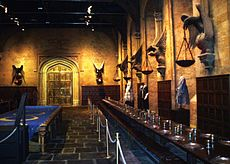
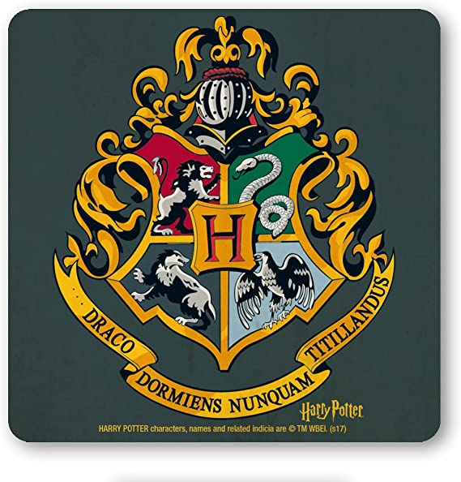
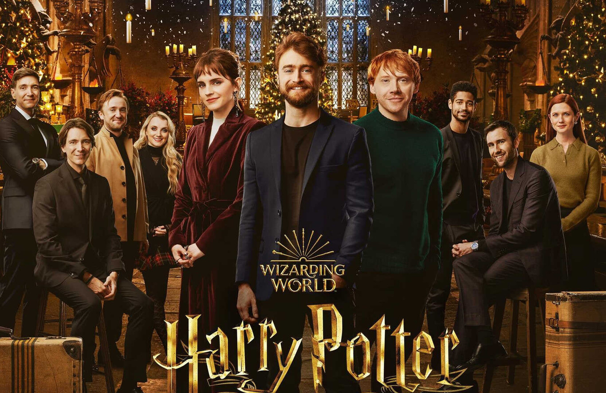

usuario
Bienvenidos a hogwarts
ACADEMIA HOGWARTS
LA ACADEMIA HOGWARTS Y LA HECHICERIA
love of wizardry

El Colegio Hogwarts es una escuela de magia perteneciente al universo de Harry Potter. Hogwarts es una escuela a la cual asisten jóvenes magos para desarrollar sus habilidades mágicas. El edificio, situado en las colinas de Escocia, es visto como un antiguo edificio en ruinas con un cartel que dice "cuidado, ruinas peligrosas", por las personas ajenas a poderes mágicos (más comúnmente conocidos como muggles). Tiene siete plantas, varias torres, escaleras que cambian de posición a su antojo y extensos terrenos que contienen un lago, un bosque, llamado El Bosque Prohibido, y varios invernaderos con fines botánicos. Además de sus numerosas aulas en las que se imparten las clases de pociones, transformaciones, Defensa contra las Artes Oscuras, Historia de la magia y demás asignaturas por asistentes calificados, el castillo posee lugares con fines diferentes. Ejemplos son el Gran Comedor (donde se celebran enormes banquetes en días especiales y que posee un techo mágico el cual parece ser el cielo y presenta el tiempo atmosférico del momento), las salas comunes, una gran biblioteca, la misteriosa Sala de los Menesteres o la legendaria Cámara Secreta, donde el famoso mago Harry Potter derrotó al mago tenebroso lord Voldemort por segunda vez y mató un basilisco usando la espada de Gryffindor, estando apenas en segundo año. Muchos pasajes ocultos, escaleras y retratos de pinturas en movimiento con vida propia, hacen que el recorrido por el castillo sea preocupante para los estudiantes más confusos, y emocionante para los más curiosos.
ESTUDIANTE ESTRELLA O REVELACION DE LA ACADEMIA HOGWARTS
Harry Potter
Harry Potter!
Harry había sido siempre pequeño y muy flaco para su edad. Incluso parecía más pequeño y enjuto de lo que realmente era, porque toda la ropa que usaba eran prendas viejas de Dudley, y su primo era cuatro veces más grande que él. Harry tenía un rostro delgado, rodillas huesudas, pelo negro y ojos verdes brillantes. Usaba anteojos redondos siempre pegados con cinta adhesiva, por todas las veces que Dudley lo había golpeado en la nariz. Lo único que a Harry le gustaba sobre su apariencia era esa pequeña cicatriz en la frente, con la forma de un rayo." su aprendizaje a sido excelente en el ambito de la hechiceria demostrando unos dotes increibles en el manejo de la cual a sido capaz de utilizar en defenza como ataque contra los mortifagos
SE BUSCA
Sirius fue arrestado por el Departamento de Aplicación de la Ley Mágica y fue condenado sin juicio a Azkaban por el asesinato de Pettigrew y las víctimas de la explosión, por revelar información sobre el paradero de los Potter que condujo a su muerte y por estar al servicio de Lord Voldemort.
Post mas gracioosos
-

kakashi
no entiendo quien es voldemor, acaso eso se come? -
carlos
quiero entrar a hogwarts -
raton
por que nadie me cree que soy hechicero -

lisa
ni ayudandolo harry toma buenas decisiones
Tags
magia potter castillos varitas malos draco malfoy Metodologia anormal vuelo Misterio Paranormal escuela Magia creaturas fantasticas
Inspiration



Sigueme
Subscribete
Ingresa tu emeil para recibir mas noticias sobre esta maravillosa academia.